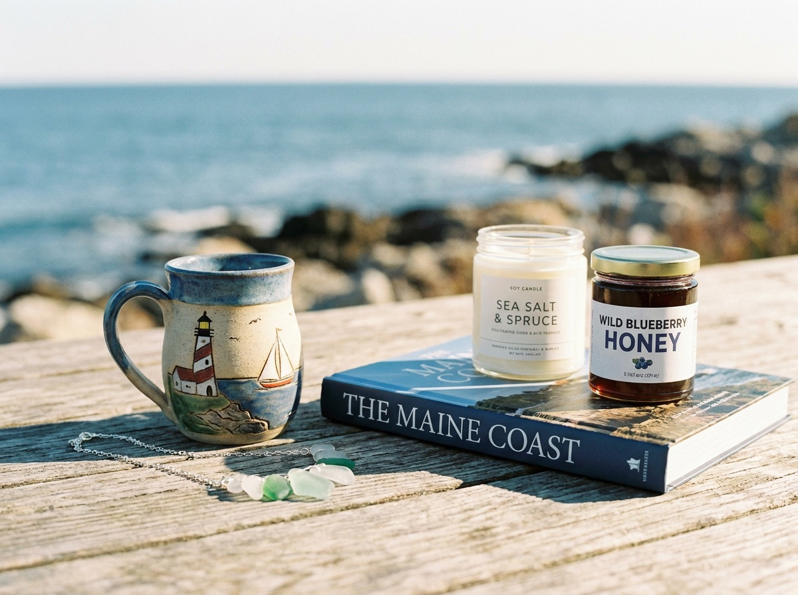

Coastal gifts & home decor
Seaside pieces for the house, the porch, the camp, or someone back home who loves the water.
At the bridge in Dock Square · Kennebunkport, Maine
A family-owned coastal gift shop right where the bridge meets Dock Square. Seaside gifts, artisan jewelry, our well-known funny shirts and mugs, books, Maine honey, and a deep, happy mix you can dig through for a while.
Walk in. We're easy to find, right at the bridge.
Preview photo of Dock Square. We'll swap in the shop's own pictures.
A Kennebunkport fixture
Dock Square is the heart of Kennebunkport. The shops, the docks, the boats, the people walking off the bridge with an ice cream. We're the family-owned shop right in the middle of all of it.
Come in for one thing and you'll leave with three. That's kind of the point. The shelves run deep and a little eclectic, so there's always something you didn't expect to find.
What's inside
Some shops have a theme and stop there. We just keep good things on the shelves and let you wander. Here's a taste of what you'll dig through.
Seaside pieces for the house, the porch, the camp, or someone back home who loves the water.
Pieces made by hand, the kind you wear because you remember where you got it.
Good reads, Maine cookbooks, and the kind of titles you flip through and have to buy.
Maine honey and local treats that pack into a bag and make an easy gift.
Soaps and small everyday luxuries that smell like a good day off.
The odds and ends that make a shop fun. Little plants under glass, finds for the shelf, things you point at and say "oh, look at that."
The thing people remember us for
People come back summer after summer for them. A tee that makes the whole table laugh. A mug that says the thing you were already thinking. They make the easiest gifts, and they're the kind of thing you can only really pick out in person.
Come read the shelf. We promise at least a couple of out-loud laughs.
Plan your visit
Why people stop in
Come see us
50 Dock Square
Kennebunkport, ME 04046
We're right at the bridge into Dock Square, the historic shopping and dining hub of Kennebunkport. Park nearby, walk the square, and we're one of the first doors you'll pass.
Hours run with the Kennebunkport season and can shift. Give us a quick call before you drive out and we'll let you know we're open.